Areas of Study · Weapon Systems
Historical
European Weapons
Historical context. Period sources. Modern study.
Explore the WeaponsDesign shaped by purpose
The weapon in its world.
Historical Sword Society instruction treats swordsmanship as a technological discipline. Each weapon system is studied as a response to period metallurgy, armor, and tactical realities. Training integrates historical sources with modern HEMA methodology to preserve both function and intent.
Seventeen weapon systems
Jump to a Weapon
Select a weapon system to jump directly to its historical context, period training sources, and modern HEMA instruction.
01 / Weapon system
Khopesh (c. 1800–800 BCE)
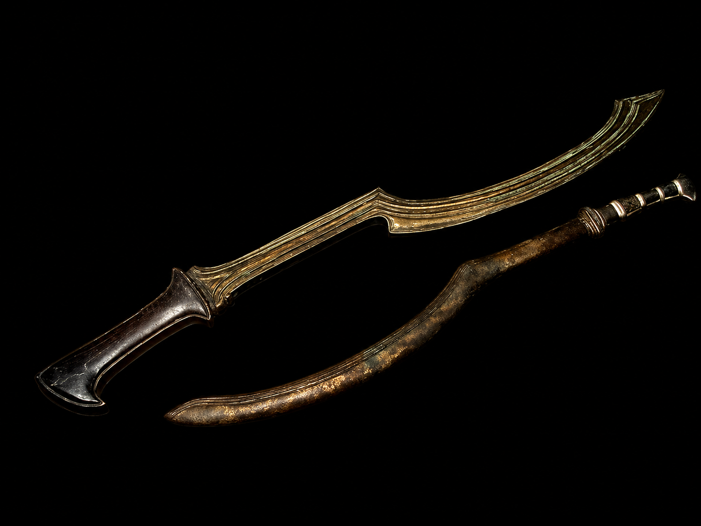
Historical & Technological Context
The khopesh represents one of the earliest purpose-designed military swords. Developed during the Bronze Age, its forward-curving, axe-like profile reflects the material limitations of bronze metallurgy, which favored chopping power over fine thrusting durability. The inward hook allowed the blade to shear through shields, trap limbs, and deliver decisive cleaving blows against lightly armored opponents.
Period Training & Use (Sources)
No formal fencing manuals survive from this period. Training methods are inferred from Egyptian reliefs and temple carvings dating to the New Kingdom, including depictions at Karnak and Medinet Habu. Combat emphasized shield control, forward momentum, and close-range dominance rather than extended exchanges or refined point work.
Modern HEMA Instruction
Modern reconstruction focuses on rotational cutting mechanics, edge alignment, and the integration of shield and sword as a single fighting system. At HSS, the khopesh is taught as a foundational study in how metallurgy directly shaped early weapon design and tactical doctrine.
02 / Weapon system
Greek Xiphos & Early Iron Short Swords (c. 800–300 BCE)
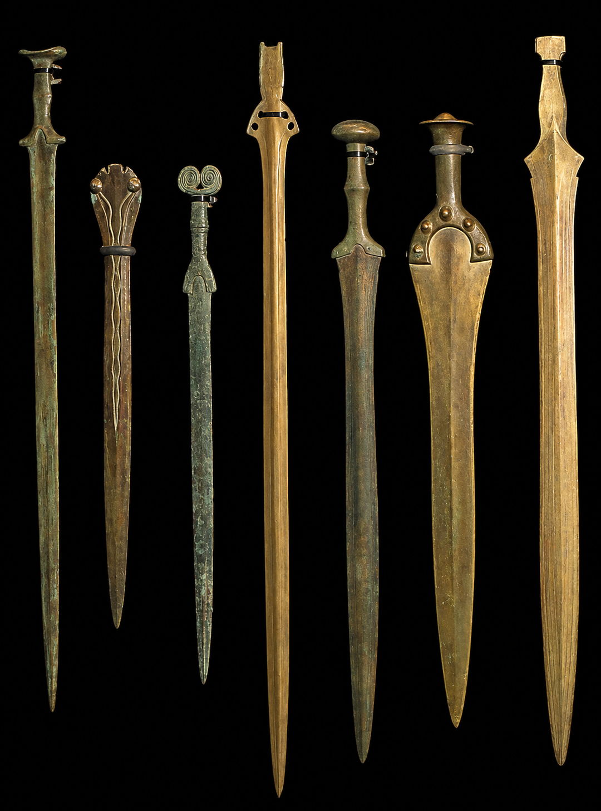
Historical & Technological Context
The transition from bronze to iron metallurgy enabled narrower, stronger blades capable of effective thrusting. The Greek xiphos evolved as a secondary weapon to the spear, optimized for close-in fighting once formations collapsed. Its leaf-shaped profile balanced cutting and thrusting, reflecting early experimentation with iron blade geometry.
Period Training & Use (Sources)
No surviving fencing treatises exist from Classical Greece. Knowledge of sword use derives from archaeological finds, painted pottery, and written accounts by authors such as Herodotus. Training emphasized formation cohesion, shield dominance, and disciplined movement rather than individual dueling skill.
Modern HEMA Instruction
HEMA reconstruction focuses on constrained-space fencing, thrust mechanics at close measure, and the transition from spear to sword within formation-based combat. Instruction emphasizes how early iron technology expanded tactical possibilities.
03 / Weapon system
Roman Gladius (c. 300 BCE–300 CE)
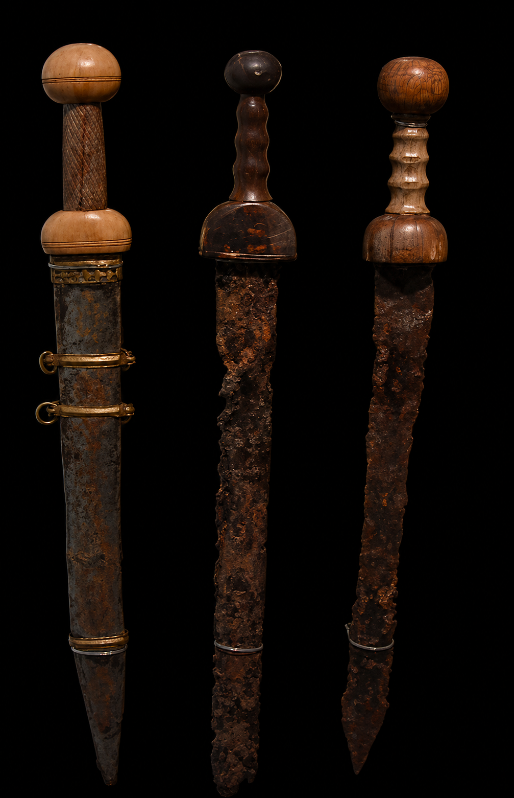
Historical & Technological Context
The Roman gladius represents one of history’s most purpose-built military swords. Short, rigid, and acutely pointed, it was optimized for thrusting within tight formations. Advances in iron and early steel production allowed Roman blades to maintain structural integrity under repeated impact, enabling lethal penetration into unarmored gaps while preserving formation discipline.
Period Training & Use (Sources)
Roman training doctrine is described in the military writings of Vegetius, particularly De Re Militari. Soldiers trained extensively with weighted practice weapons, prioritizing thrusts over cuts for efficiency, endurance, and battlefield survivability. Sword use was inseparable from shield control and unit cohesion.
Modern HEMA Instruction
Modern instruction emphasizes centerline control, structural alignment, and economical motion. At HSS, the gladius is taught as a study in tactical restraint, illustrating how doctrine and discipline can outweigh individual flair.
04 / Weapon system
Falcata (c. 500–200 BCE)
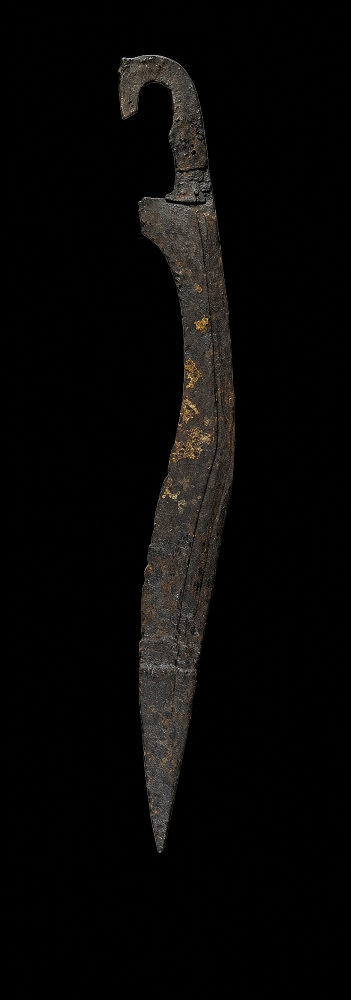
Historical & Technological Context
The falcata was wielded by Iberian warriors and became infamous during Rome’s campaigns in Hispania. Its forward-curving, forward-weighted blade delivered exceptional cutting power, capable of defeating Roman shields and helmets. Superior Iberian steel-working techniques allowed harder edges and more resilient blades than those commonly encountered by Roman forces.
Period Training & Use (Sources)
No fencing manuals survive from Iberian cultures of this period. Roman historical accounts by Polybius and Livy describe the shock effect and destructive capability of Iberian swords against legionaries. Training emphasized aggressive forward pressure, decisive cuts, and close-range combat supported by shield use.
Modern HEMA Instruction
Modern reconstruction emphasizes cutting mechanics driven by forward mass distribution, edge alignment, and rotational power. At HSS, falcata study highlights how blade geometry can compensate for limited thrusting capability.
05 / Weapon system
Roman Spatha (c. 200–600 CE)
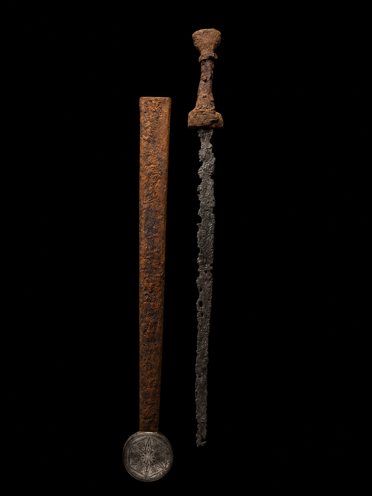
Historical & Technological Context
The spatha evolved as Roman warfare shifted away from dense infantry formations toward increased cavalry use and more fluid battlefield conditions. Longer than the gladius, the spatha provided extended reach and improved cutting capability while retaining effective thrusting performance. Its design foreshadows early medieval sword forms.
Period Training & Use (Sources)
Late Roman military practices, as described by Vegetius, indicate continued emphasis on disciplined training and repetition. The spatha saw extensive use among cavalry units, requiring broader cutting mechanics and adaptability to mounted combat.
Modern HEMA Instruction
In HEMA study, the spatha is treated as a transitional weapon bridging classical Roman and early medieval fencing concepts. Training emphasizes reach management, cutting mechanics, and the evolution of sword length in response to tactical need.
06 / Weapon system
Viking Sword (c. 750–1050)
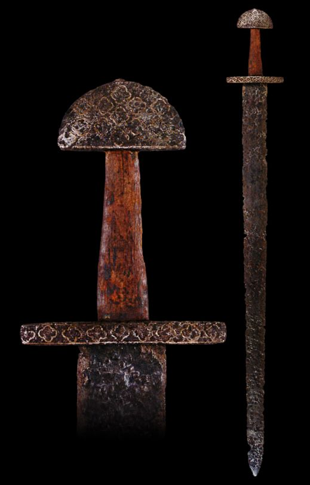
Historical & Technological Context
Viking swords represent the refinement of early medieval steelworking, often utilizing pattern-welded construction to balance resilience and cutting power. Broad blades with pronounced fullers allowed effective cuts against lightly armored opponents while maintaining manageable weight for prolonged combat.
Period Training & Use (Sources)
No formal fencing manuals survive from the Viking Age. Knowledge of sword use is derived from archaeological evidence and narrative sources such as the Icelandic sagas, including Njáls Saga and Heimskringla. Training was pragmatic and experience-driven, emphasizing shield integration and decisive blows.
Modern HEMA Instruction
HEMA reconstruction focuses on shield-sword coordination, rotational cutting mechanics, and close-range exchanges. At HSS, Viking sword training emphasizes tactical aggression tempered by control and structure.
07 / Weapon system
Arming Sword (c. 1000–1350)
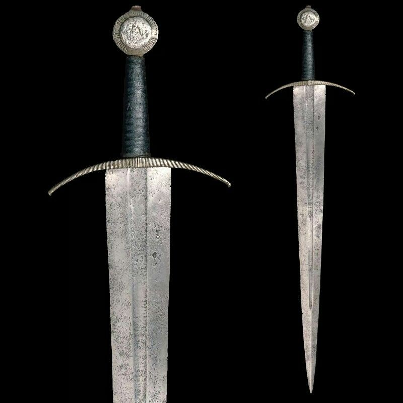
Historical & Technological Context
The arming sword refined earlier Viking forms into a knightly sidearm suited to a world dominated by mail and emerging plate defenses. Improvements in steel and heat treatment supported more acute points and stronger distal taper, enabling effective thrusting into gaps while preserving credible cutting power.
Period Training & Use (Sources)
Early European fencing doctrine appears in the manuscript commonly known as I.33 (c. 1300), a foundational source for sword-and-buckler play. It presents structured lessons emphasizing guards (custodiae), binding, timing, and tactical decision-making. Period training integrated weapon use with grappling and shield control depending on context.
Modern HEMA Instruction
Modern HEMA instruction develops the arming sword as a core curriculum weapon, introducing measure, leverage, and bind work that later expands into longsword and sidesword systems. At HSS, training includes both solo structure drills and paired tactical exercises.
08 / Weapon system
Falchion (c. 1200–1500)
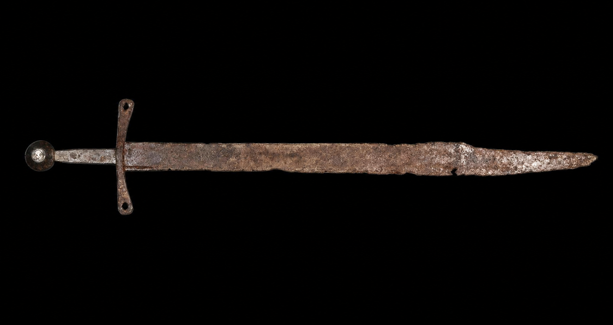
Historical & Technological Context
The falchion represents a specialization toward cutting dominance during the High Medieval period. Single-edged construction, often with forward-weighted blades, optimized the weapon for powerful blows capable of damaging mail armor and exploiting unprotected targets. Its form reflects an intentional tradeoff: sacrificing refined thrusting for decisive cutting force.
Period Training & Use (Sources)
While no dedicated falchion fencing manual survives, the weapon appears frequently in period artwork such as the Maciejowski Bible (c. 1250). Its use is inferred from contemporary arming sword and messer traditions, emphasizing committed cuts, strong structure, and aggressive initiative.
Modern HEMA Instruction
HEMA falchion practice focuses on edge alignment, leverage, and momentum management. At HSS, falchion training highlights how blade mass distribution influences tactical decision-making and cutting efficiency.
09 / Weapon system
Longsword (c. 1350–1600)
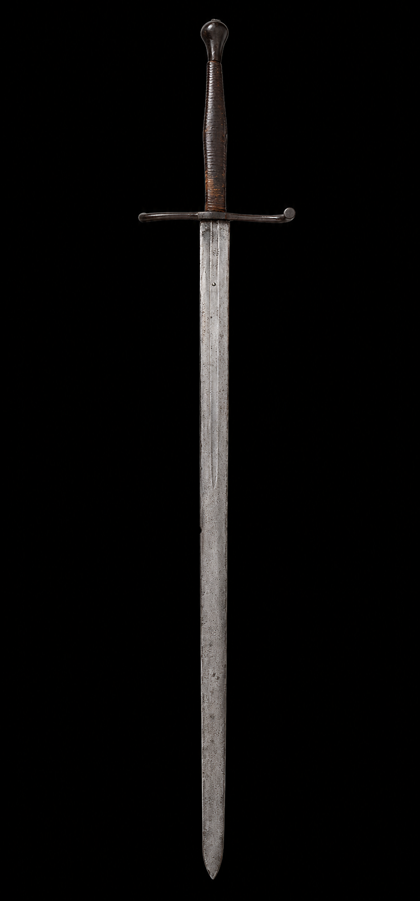
Historical & Technological Context
The longsword evolved in parallel with the widespread adoption of plate armor. Longer blades, extended grips, and acute points enabled a highly versatile weapon capable of powerful cuts, precise thrusts, half-swording, and grappling techniques. Its design reflects a technological response to hardened defenses and increasingly sophisticated martial systems.
Period Training & Use (Sources)
Longsword fencing is extensively documented in late medieval martial manuscripts. The German tradition attributed to Johannes Liechtenauer appears in texts such as MS 3227a, while the Italian tradition is preserved in Fiore dei Liberi’s Fior di Battaglia. These sources emphasize timing (tempo), distance (measure), binding, and tactical decision-making in both armored and unarmored contexts.
Modern HEMA Instruction
Longsword remains a cornerstone of modern HEMA. At HSS, instruction integrates historical drills with modern training methods, focusing on timing, structure, adaptability, and controlled intensity across paired and free-play exercises.
10 / Weapon system
Montante / Zweihänder (c. 1500–1650)
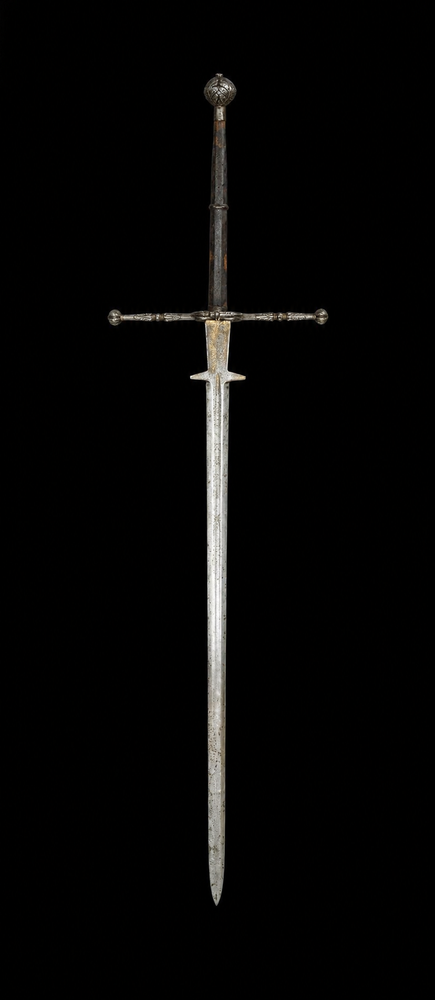
Historical & Technological Context
Greatswords such as the montante and zweihänder evolved to control space on crowded battlefields, disrupt pike formations, and protect high-value personnel. Their size and leverage allowed wide arcs of attack and strong defensive coverage, reflecting battlefield requirements rather than civilian dueling norms.
Period Training & Use (Sources)
Iberian greatsword methods are preserved in dedicated sources, including Domingo Luis Godinho’s Arte de Esgrima (1599) and Diogo Gomes de Figueyredo’s Oplosophia (mid-17th century). These works emphasize continuous motion, structured “rules” or sequences, and the tactical use of reach and momentum to dominate multiple lines of approach.
Modern HEMA Instruction
Modern HEMA practice commonly teaches montante through flow drills that develop endurance, footwork discipline, spatial awareness, and safe power generation. At HSS, montante training is presented as an applied study in space control and tactical movement under pressure.
11 / Weapon system
Rapier (c. 1500–1700)
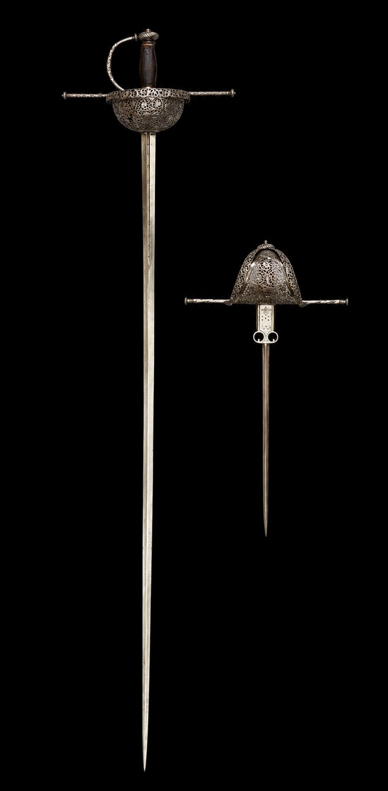
Historical & Technological Context
The rapier emerged in response to declining battlefield armor and the rise of civilian self-defense and judicial dueling. Long, narrow blades with complex hilts prioritized thrusting precision and point control over heavy cutting power. Advances in steel production enabled blades capable of extreme length without sacrificing structural integrity.
Period Training & Use (Sources)
Rapier fencing is extensively documented in Renaissance treatises. Key sources include Camillo Agrippa’s Trattato di Scientia d’Arme (1553), Ridolfo Capo Ferro’s Gran Simulacro (1610), and Salvator Fabris’ Lo Schermo (1606). These works emphasize geometry, measure, timing, and control of the opponent’s blade through opposition and engagement.
Modern HEMA Instruction
Modern HEMA rapier instruction preserves the intellectual and technical character of historical fencing. At HSS, training emphasizes point dominance, tactical patience, and historically grounded decision-making through structured drills and free fencing.
12 / Weapon system
Sidesword / Broadsword (c. 1450–1700)
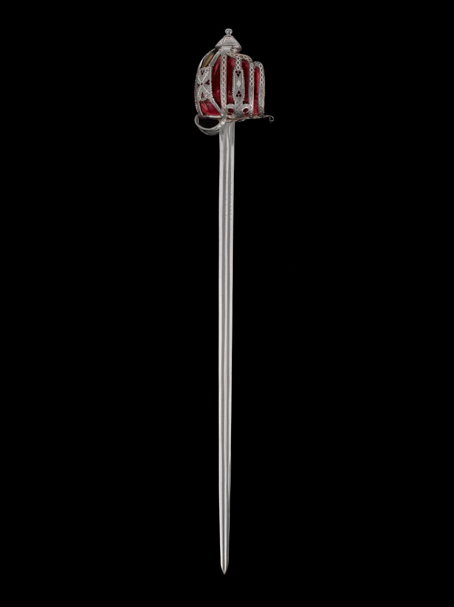
Historical & Technological Context
The sidesword and early broadsword traditions reflect a transitional period where both cut and thrust remained tactically relevant. As armor declined in civilian life but persisted in military contexts, these swords preserved robust cutting ability while maintaining credible point work. Hilts became increasingly protective, evolving toward complex guards and baskets to support extended hand-forward engagements.
Period Training & Use (Sources)
Italian cut-and-thrust systems are documented in works such as Antonio Manciolino’s Opera Nova (1531) and Achille Marozzo’s Opera Nova (1536). These sources emphasize structured guards, tempo, and combined arms pairings (buckler, dagger, cape), reflecting the realities of both civic defense and battlefield sidearm use.
Modern HEMA Instruction
Modern HEMA training treats sidesword as a core transitional discipline, developing adaptive decision-making across cut and thrust. At HSS, instruction commonly integrates paired-weapon options and tactical problem sets derived from the period sources.
13 / Weapon system
Small Sword (c. 1650–1800)
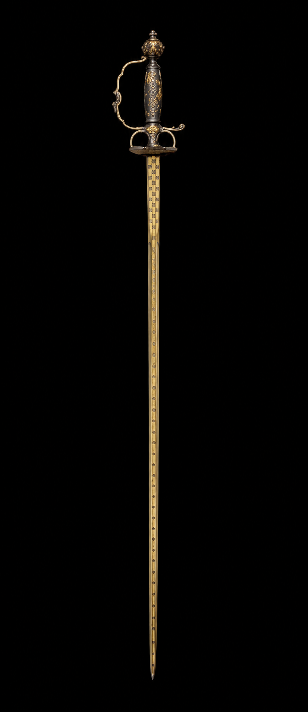
Historical & Technological Context
The small sword represents the culmination of civilian thrust-centric fencing. As armor disappeared from personal combat, blades became lighter, narrower, and optimized exclusively for the thrust. Cutting capacity was intentionally abandoned in favor of speed, precision, and refined point control. This technological shift reflects social as well as martial evolution, aligning swordsmanship with etiquette and formalized dueling conventions.
Period Training & Use (Sources)
Small sword fencing is well documented in French and Italian sources of the late seventeenth and eighteenth centuries. Notable treatises include works by Domenico Angelo, whose methods emphasized posture, linear footwork, and controlled extension. These systems formalized many principles that would later define modern sport fencing.
Modern HEMA Instruction
In modern HEMA practice, small sword is taught as a precision discipline focused on timing, distance, and tactical subtlety. At HSS, instruction highlights its direct influence on contemporary fencing pedagogy and its role as a technological endpoint of the rapier tradition.
14 / Weapon system
Shamshir / Scimitar (c. 900–1800)
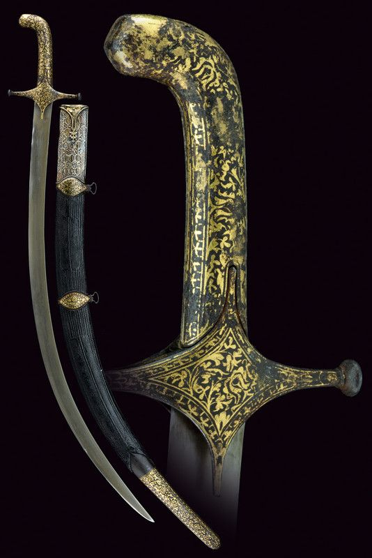
Historical & Technological Context
Deeply curved swords such as the shamshir evolved in regions where mounted warfare remained central. Curvature optimized the draw cut, allowing effective cutting while passing at speed on horseback. This reflects a tactical adaptation: instead of driving a point through armor, these swords exploited mobility, timing, and slicing mechanics against lightly armored targets.
Period Training & Use (Sources)
While the Islamic world preserves many military and horsemanship writings, surviving sources relevant to sword use are often embedded within broader treatises on warfare and cavalry skills rather than stand-alone fencing manuals. Practical instruction is also evidenced through Persian miniature traditions and Ottoman military culture. Period training emphasized cutting from motion, wrist-edge control, and the ability to generate reliable draw cuts under cavalry conditions.
Modern HEMA Instruction
Modern reconstruction emphasizes curved-blade cutting physics, edge alignment across an arc, and tactical movement consistent with cavalry-derived mechanics. At HSS, this study is framed as a parallel technological branch: a different solution set shaped by mobility and operational context rather than plate-armor defeat.
15 / Weapon system
Cutlass (c. 1650–1850)
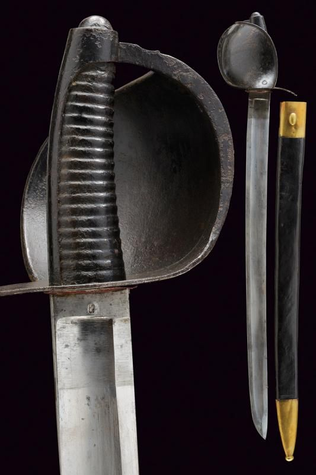
Historical & Technological Context
The cutlass emerged as a utilitarian naval weapon designed for close-quarters combat aboard ships. Shorter blade length, moderate curvature, and robust construction made it effective in confined spaces and resilient under harsh maritime conditions. Its design reflects industrial-age pragmatism rather than aristocratic or dueling culture.
Period Training & Use (Sources)
Cutlass use is documented in British and European naval drill manuals of the eighteenth and nineteenth centuries. Training emphasized aggression, simplicity, and reliability, focusing on decisive cuts, basic parries, and rapid engagement at close range rather than refined fencing theory.
Modern HEMA Instruction
In modern HEMA contexts, cutlass fencing is often taught alongside military sabre. At HSS, instruction focuses on close-quarters tactics, durability-oriented blade handling, and the relationship between naval weapons and later sabre systems.
16 / Weapon system
Saber (c. 1700–1900)
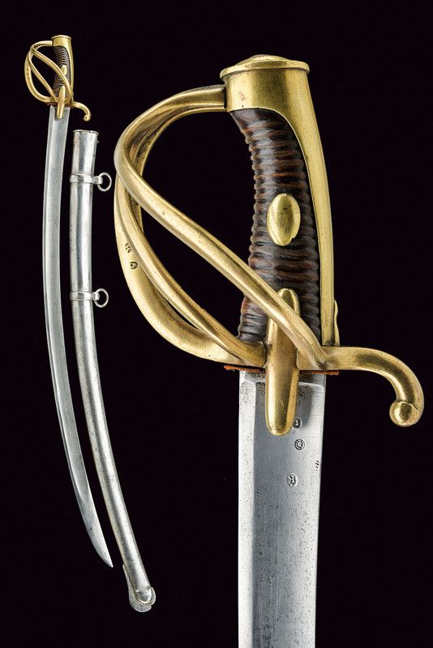
Historical & Technological Context
The saber evolved from earlier curved cavalry swords as firearms reduced the prevalence of heavy armor. Designed for speed, reach, and effective cutting from horseback, sabers balanced curvature with sufficient point geometry to allow thrusting when required. National variations reflect differing cavalry doctrines and battlefield priorities.
Period Training & Use (Sources)
Saber fencing is well documented in military manuals across Europe, including Hungarian, French, Polish, and British traditions. These sources emphasize initiative, speed, cutting lines, and aggressive tempo, often prioritizing offensive action over prolonged defensive exchanges.
Modern HEMA Instruction
Modern HEMA saber integrates historical military sources with contemporary training methods. At HSS, sabre instruction focuses on timing, cutting mechanics, and tactical decision-making derived from cavalry doctrine while remaining adaptable to foot combat.
17 / Weapon system
Russian Shashka (c. 1800–present)
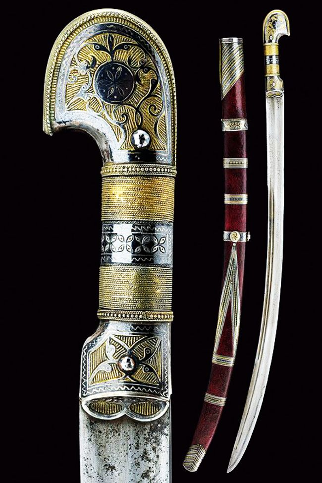
Historical & Technological Context
The shashka represents a late-stage evolution of the cavalry sabre, optimized for speed, cutting efficiency, and continuous motion. Characterized by minimal or absent hand guards and pronounced curvature, it reflects a design philosophy favoring fluid, instinctive cutting over complex defensive structures. Its form was well suited to fast-moving cavalry engagements and irregular warfare.
Period Training & Use (Sources)
Shashka use is documented through Cossack military tradition, Imperial Russian cavalry regulations, and oral transmission rather than formal fencing treatises. Training emphasized natural biomechanics, continuous cutting motion, and decisive offensive action, often practiced from horseback as well as on foot.
Modern HEMA Instruction
In modern historical study, shashka fencing focuses on flowing drills, cutting precision, and momentum control. At HSS, instruction highlights the contrast between shashka mechanics and Western sabre systems, illustrating divergent technological solutions to similar cavalry problems.